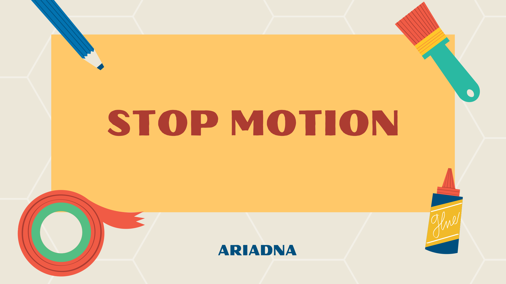

Apunts de Stop Motion
Benvinguts i benvingudes al web d'apunts sobre stop motion.
Aquest lloc està pensat com a material de suport per a una activitat de creació audiovisual a classe. A partir d'ací veurem què és aquesta tècnica, com es prepara una animació senzilla i quins passos ha de seguir l'alumnat per crear el seu propi vídeo.

Què trobareu en aquest web?
- Una explicació bàsica de la tècnica de stop motion.
- Les variants principals, com la claymation i la pixilació.
- Les fases de treball: guió, rodatge i muntatge.
- Una proposta d'activitat per a l'alumnat.
- Una rúbrica d'avaluació.
<div class="admonition note"><strong>Objectiu</strong> L'objectiu és que l'alumnat entenga com es pot crear la sensació de moviment a partir de fotografies fixes i que siga capaç de produir una animació breu en grup. </div> ## Navegació ràpida
- Ves als apunts per entendre la tècnica.
- Revisa les fases del procés.
- Consulta la proposta d'activitat.
- Mira la rúbrica d'avaluació.